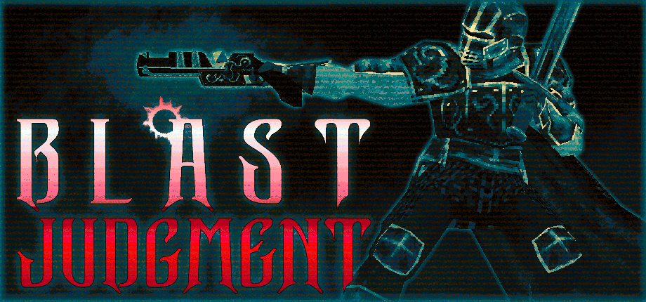

Playing Downwell
To control the player, I started with the popular Kinematic Character Controller. I like how the asset gives you full control of the movement logic while encapsulating the underlying collision system. I hooked that up with Unity's new input system - it has some quirks but I appreciate how it abstracts multiple input types into actions. Even for small projects gamepad input is a priority for me because I just enjoy using one, but most players will use keyboard+mouse.
The player movement is snappy, with high acceleration starting and stopping, identical on the ground and in the air. Jumps are variable height and there's some 'coyote time' after walking off a ledge.
Camera aiming without using the right analog stick or mouse was a fun design challenge. If I could ditch any need to look left or right, I'd only need to adjust the pitch. It seems clear enough that if the player is on the ground they don't want to be looking down, but I also wanted to be able to peek over ledges so you could see what challenges lie below. So to determine the camera pitch, I use a series of raycasts which detect floors and walls in front of the player, as well as other contextual clues like if the player is jumping.
Red lines / green line are raycasts used to calculate the camera pitch.
Implementing caves without camera rotation also required a creative solution. Since the caves are completely safe, you don't need to be able to see where you're going on the way in. So all the cave entrances are on the back-side of the well, allowing the player to see obstacles as they exit the cave. An arrow pointing into the cave should help players know it's safe to back into the entrance.

The first thing I modeled for this project was some enemies. I love reimagining pixel art sprites in 3d. They simply use vertex colors instead of texturing. I followed some of the Downwell color conventions - enemies that are mostly white on top can be stomped on, mostly red have to be taken out with your weapon.
All of them are takes on Downwell enemies, but I changed some behaviors. The snails in Dropchute have spikes that fire outwards periodically. The evil eye AI tries to go to a location below the player before attacking them directly - this actually helps them intercept a descending player more often. Enemies have some variations - versions that are faster, have more spikes, or have attachments.
Attachments are a new concept, there are two types: damage crescents and shields. Damage crescents add rotating hurtboxes around an enemy, shields act like the turtle shell and block bullets.
I tried to use these ideas to make navigating the 3d space more challenging. More difficult enemies and variations spawn the further the player falls. In the end, this wasn't enough on its own, I also increase the player's terminal velocity + gravity with depth to make the game difficult. I think with more enemy types and traps it would be possible to have all the difficulty come from a bullet-hell-like descent.
When enemies get stomped or hit by bullets, a hitstop effect amplifies the impact: freezing them in place, boosting their scale, and flashing white.
The stage is generated endlessly from a set of SectionSpawner prefabs. Instead of instantiating copies of these prefabs, they're used to create WellSections and Entitys.
WellSection holds the static geometry of a level section.
WellBuilder to fit sections together.CaveInsertionPoint can be specified if a cave can be inserted into the wall of the section.Entity component is used by game objects that are spawned and destroyed/removed.085
Entity component.Dynamic boolean notes if the entity can move between well sections (explained later).SpawnProbability controls whether an entity is spawned. This has four factors:
SpawnProbabilityGroups are also tracked by the SectionSpawner.
SpawnProbability
SectionSpawner prefab, with WellSection selected showing the top and bottom sizes.
All the possible enemies and blocks that have a chance of spawning can be seen.
OnValidate() is used by SectionSpawner to preprocess the children of the prefab root, finding Entitys and saving their transform information + a link to their original prefab. Without getting into too much detail on the object pooling system, this allows any Entity with the same original prefab to be object pooled together, while using unique transform and SpawnProbability settings.
Overall I think the set of pieces I created for well generation (16 total) could have more variation, and there's occasional sloppyness with the placement of some enemies and objects. It would be nice to have more unique gimmick pieces that spawn rarely (like you have to blow up some destructible spike blocks to get through). It's just a bit time consuming to construct and curate many SectionSpawner prefabs for a small project.

Simplified terrain shader example.
The full graph has some more features:
Other objects used simple vertex color shaders. For enemies, a variable can brighten the whole mesh when hit by bullets. Gems have a fake reflection using the view normal. Outlines for things like gems and spikes are just implemented in Blender with the flipped normals trick.
Two shaders are applied to the whole screen, distance fading and the palette. To apply their materials I use two instances of a ScriptableRendererFeature named Blit, based on this one by Cyanilux (excellent tutorials about everything URP!). In Dropchute, I use camera stacking to draw the UI/HUD on top of the game, and here it's important to insert the two Blit effects one time each in the correct order:
By default, the Blit features would run at some point during each camera render. Not only is this unnecessary, but the UI would be erased by distance fading when the level geometry behind it was far away. My edit takes a look at some data attached to the Camera component found in RenderingData in the AddRenderPasses method to only insert the render pass for the correct camera. This works perfectly even though it feels a bit hacky - I'm curious if there's a more elegant way to do it, or if this is just something Unity plans to fix by supporting custom effects in the Volume system.

The sounds and music of Downwell have a wonderful arcadey, crunchy aesthetic (credit Joonas Turner and Eirik Suhrke). My amateur sound and music creation for Dropchute involved:
Tumblehole.mp3